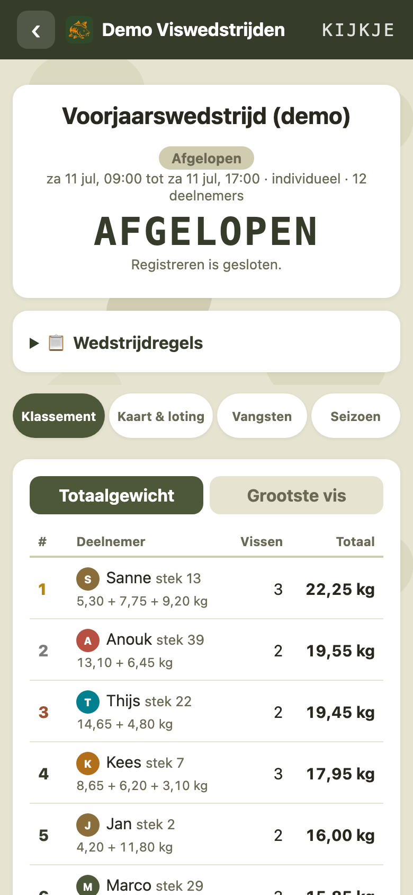
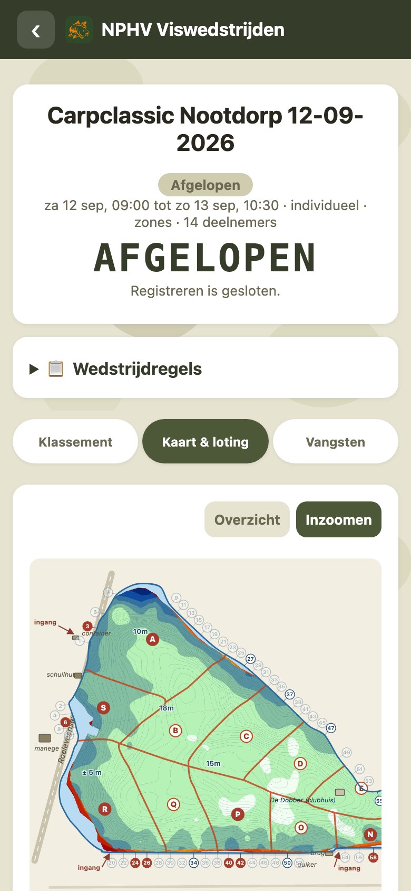
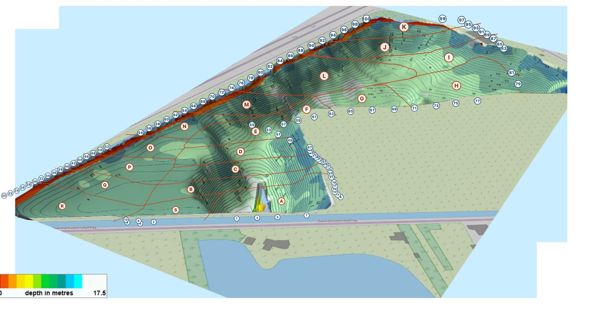
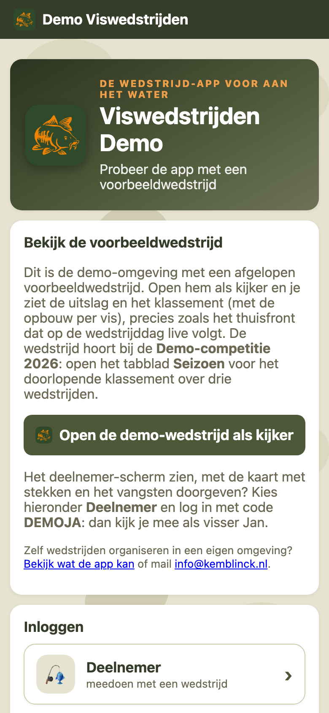

Loot. Vis. Win.
Digitale loting, stekkeuze op de eigen waterkaart, vangsten met foto en een live klassement. Alles op de telefoon van de visser, niets op papier. Voor verenigingen, viswaters en vriendengroepen.

Loten zonder briefjes, kiezen zonder discussie
Eén druk op de knop bepaalt willekeurig de kiesvolgorde. Iedereen ziet direct zijn lotnummer op de eigen telefoon en kiest om de beurt een plek. Per wedstrijd kies je individueel (één stek per visser) of koppels: twee aangrenzende stekken, een gezamenlijke score en een eigen teamnaam.
Jullie water als interactieve kaart
Jullie eigen waterkaart wordt gedigitaliseerd voor de app: de echte dieptekaart als ondergrond, met steknummers, herkenningspunten en een vaste zone-indeling eroverheen. Eén tik op een zoneletter kiest de hele zone. Vrij is wit, bezet is rood, jouw plek is groen. Geen eigen kaart? Dan start je met een standaardkaart die direct werkt.
In de telefoon: een echt voorbeeld, de dieptekaart van de Plas van der Ende zoals die in de app van de NPHV staat.


Vangst erin, klassement bijgewerkt
Vangst registreren duurt 20 seconden: gewicht invullen, foto als bewijs erbij, klaar. De vangst telt direct mee en iedereen krijgt een pushmelding. Het klassement toont totaalgewicht en grootste vis, met de opbouw per gevangen vis. Het thuisfront volgt live mee met een aparte kijkcode, zonder te kunnen deelnemen.
En de klok is de baas: de aftelklok loopt op servertijd en na de eindtijd blokkeert de server elke registratie. Een discussie over "net op tijd" bestaat niet meer.
De competitie telt zichzelf op
Koppel wedstrijden aan een seizoen en de app rekent het seizoensklassement automatisch uit, volgens de landelijke wedstrijdreglementen (Sportvisunie): plaatspunten of totaalgewicht, aftrekwedstrijden en nette regels voor niet-vangers en gemiste wedstrijden. Per seizoen én per wedstrijd instelbaar; deelnemers en thuisblijvers zien de tussenstand gewoon in de app.
Eén tik naar de groepsapp of Instagram
De einduitslag, de seizoensstand en elke gevangen vis deel je met één tik als strakke afbeelding op WhatsApp, Instagram of Facebook, met foto, gewicht en wedstrijdnaam erop. En direct na het aanmaken van een wedstrijd staat de uitnodiging (code + directe link) klaar om de groepsapp in te sturen.
Geen accounts, geen App Store
Deelnemers loggen in met een wedstrijdcode en hun naam. Meer niet. De app werkt op iPhone en Android, komt als icoon op het beginscherm en blijft werken bij slecht bereik aan het water.
De organisator heeft eigen gereedschap: een wedstrijd staat in een minuut klaar, aanmeldingen zijn live te volgen, een plek toewijzen aan wie niet reageert kan met één tik, en vangsten zijn te corrigeren of handmatig in te voeren (ook na de eindtijd). Eerdere wedstrijden blijven in het archief staan.

Zo werkt een wedstrijddag
Vooraf: de organisator maakt de wedstrijd aan en deelt de wedstrijdcode in de groepsapp. Vissers melden zich aan met hun naam en zetten de app op hun beginscherm.
De ochtend: loting starten, iedereen kiest om de beurt een zone op de kaart, en vissen maar.
Tijdens en na: vangsten komen live binnen met pushmeldingen (en zijn direct te delen op social media), het klassement staat na de eindtijd meteen vast, de einduitslag gaat met één tik de groepsapp in en de prijsuitreiking kan direct beginnen. Telt de wedstrijd mee voor de competitie, dan staat ook de seizoensstand meteen bijgewerkt in de app.
Geen registratie buiten de wedstrijd
Vissers zijn terecht zuinig op hun stekken en hun vangsten. Daarom is deze app bewust alleen een wedstrijd-app:
- Geen accounts, geen profielen, geen vangstenlogboek dat je bijhoudt.
- Geen locatie-tracking; de kaart toont alleen de stekken van de wedstrijd.
- Vangsten zijn alleen zichtbaar voor wie de wedstrijd- of kijkcode heeft.
- De gegevens blijven van de club; geen doorverkoop, geen advertenties.
Veelgestelde vragen
Moeten deelnemers een app installeren?
Nee. De app werkt direct in de browser via een link of code. Wie wil, zet hem als icoon op het beginscherm (dat raden we aan voor pushmeldingen), maar een App Store of Play Store komt er niet aan te pas.
Werkt het ook bij slecht bereik aan het water?
Ja. De app is bewust licht gehouden en verbruikt weinig data. Bij een korte onderbreking loopt de klok gewoon door en haalt de app de tussenstand daarna vanzelf weer op.
Kunnen we onze eigen wedstrijdregels gebruiken?
Ja. Per wedstrijd stel je de regels in en die zijn voor iedereen zichtbaar in de app. Voor de seizoenscompetitie kies je per seizoen de telling (plaatspunten of totaalgewicht), aftrekwedstrijden en de regels voor niet-vangers en gemiste wedstrijden.
Wat kost een eigen omgeving?
Iedere organisatie krijgt een eigen omgeving op viswedstrijdapp.nl, met eigen waterkaart en zone-indeling. De prijs hangt af van de kaart (standaardkaart of jullie eigen water gedigitaliseerd). Mail naar info@kemblinck.nl voor het prijzenblad.
Voor welke wedstrijden is de app geschikt?
Voor viswedstrijden op gewicht: karper, witvis, individueel of in koppels, losse wedstrijden of een hele seizoenscompetitie. Van verenigingswedstrijd tot een onderlinge wedstrijd met vrienden.
Ook voor jullie wedstrijden?
Voor hengelsportverenigingen en viswaterbeheerders, maar net zo goed voor een groep vrienden die zelf een wedstrijd organiseert. Iedere organisatie krijgt een eigen omgeving op viswedstrijdapp.nl met eigen waterkaart, zone-indeling en wedstrijdregels. Interesse of vragen?